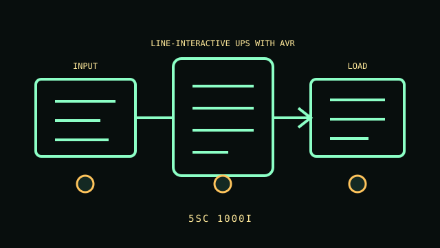

[ LINE-INTERACTIVE UPS WITH AVR // IDENTIFIED MODEL ]
5SC 1000i
1000 VA / 700 W, 230 V regional model. Eight IEC C13 outputs. This record describes the named regional model only. Variants and accessories must be matched against the complete product label and manufacturer documentation.

ARCHIVAL IDENTIFICATION: Preserve the complete SKU, region, serial/date code, hardware/firmware revision, installed options and observed condition. Similar names do not establish electrical equivalence.
Exact model specifications
| Catalog category / topology | Line-interactive UPS — Line-interactive UPS with AVR. |
|---|---|
| Electrical ratings | 1000 VA / 700 W, 230 V regional model. |
| Receptacles / connectors | Eight IEC C13 outputs. |
| Battery / replacement / hot-swap | This UPS contains a sealed lead-acid battery; replace only with the exact manufacturer-approved part using the model-specific service procedure. Hot-swap is not assumed unless the manual permits it. LCD, USB and RS-232; optional network card by configuration. Replaceable sealed lead-acid battery; hot-swap only as allowed by matching 5SC manual. |
| Runtime / operating conditions | Use the manufacturer runtime curve at measured output watts with a fully charged, serviceable battery. Runtime varies with load/power factor, battery age and condition, charge state and ambient temperature; record these conditions for each test. |
| Network / monitoring interface | Model-specific local LCD/LED and/or USB/serial host signaling as identified in the model note; no native network management is assumed unless an optional supported network card is installed. |
| Electrical compatibility | LCD, USB and RS-232; optional network card by configuration. Replaceable sealed lead-acid battery; hot-swap only as allowed by matching 5SC manual. |
| Warnings / revision controls | LCD, USB and RS-232; optional network card by configuration. Replaceable sealed lead-acid battery; hot-swap only as allowed by matching 5SC manual. Verify complete suffix, electrical ratings, connectors, firmware/manual revision and regional certification against the actual nameplate before connecting equipment. |
Service and archival notes
- Photograph the nameplate, inlet/outlet map, serial/date code, status indicators and accessories; record load, input, environment and test date separately from manufacturer ratings.
- Do not infer runtime from a no-load self-test. Check battery age, alarms and condition; a replace-battery indicator or failed capacity test means runtime is unverified.
- Never open energized mains equipment. Do not energize cracked enclosures, damaged cords, overheated connectors, compromised grounding or swollen/leaking batteries.
- LCD, USB and RS-232; optional network card by configuration. Replaceable sealed lead-acid battery; hot-swap only as allowed by matching 5SC manual.
Manufacturer sources and manual
- Eaton manufacturer product search — 5SC 1000iFind the manufacturer’s specification sheet for the exact named model and regional SKU.
- Eaton manuals / support libraryUse the user guide, service and safety instructions matching the label and revision. This static archive does not replace manufacturer documentation.